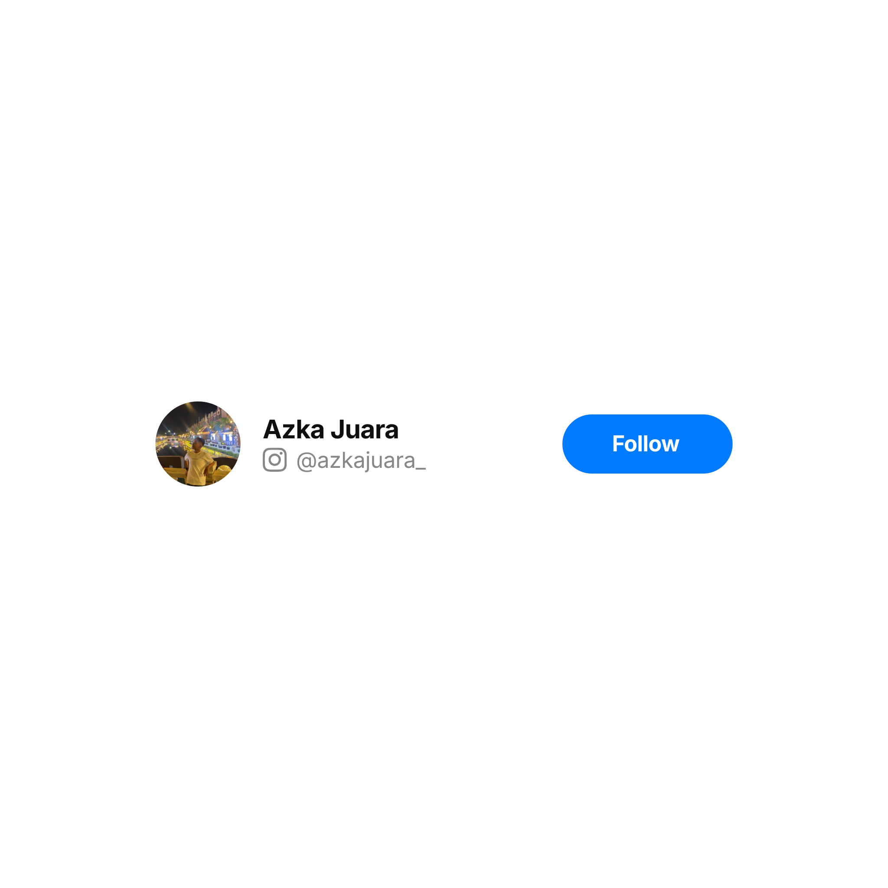

Tentang Aku
Rasa penasaran selalu menjadi pemicu terbesarku dalam belajar. Bagiku, memahami rahasia bagaimana alam semesta, tumbuhan, dan sistem tubuh manusia bekerja rasanya seperti memecahkan teka-teki misteri yang tak pernah membosankan.
Aku percaya bahwa kecerdasan analitis dan imajinasi kreatif harus berjalan beriringan. Saat sedang tidak membaca modul olimpiade IPA, aku gemar merangkai jalan cerita fiksi untuk melatih kepekaan empati, serta membedah baris-baris kode web untuk melatih ketajaman logika penyelesaian masalah.
Pengalaman bertanding di panggung kompetisi mengajarkanku arti konsistensi, ketenangan, dan kerja keras. Semua proses ini aku jalani dengan penuh kegembiraan sebagai bekal untuk berkontribusi di bidang sains dan kesehatan kelak.
Bercita-cita mendalami dunia kedokteran untuk menolong sesama. Kecintaan pada sains sejak bangku sekolah dasar menjadi fondasi awal untuk memahami sains biomedis dan kesehatan secara mendalam.
Tertarik merancang halaman web dan memahami cara kerja algoritma. Koding menjadi sarana rehat yang mengasyikkan sekaligus mengasah cara berpikir sistematis dan terstruktur.
Mari Terhubung
Ada Pertanyaan Seputar Aku atau Mau Diskusi Aja?
Kalau kamu ingin berdiskusi tentang persiapan kompetisi sains, saling berbagi tips belajar IPA, atau sekadar bertukar ide, silakan kirim pesan ke Instagram aku!
